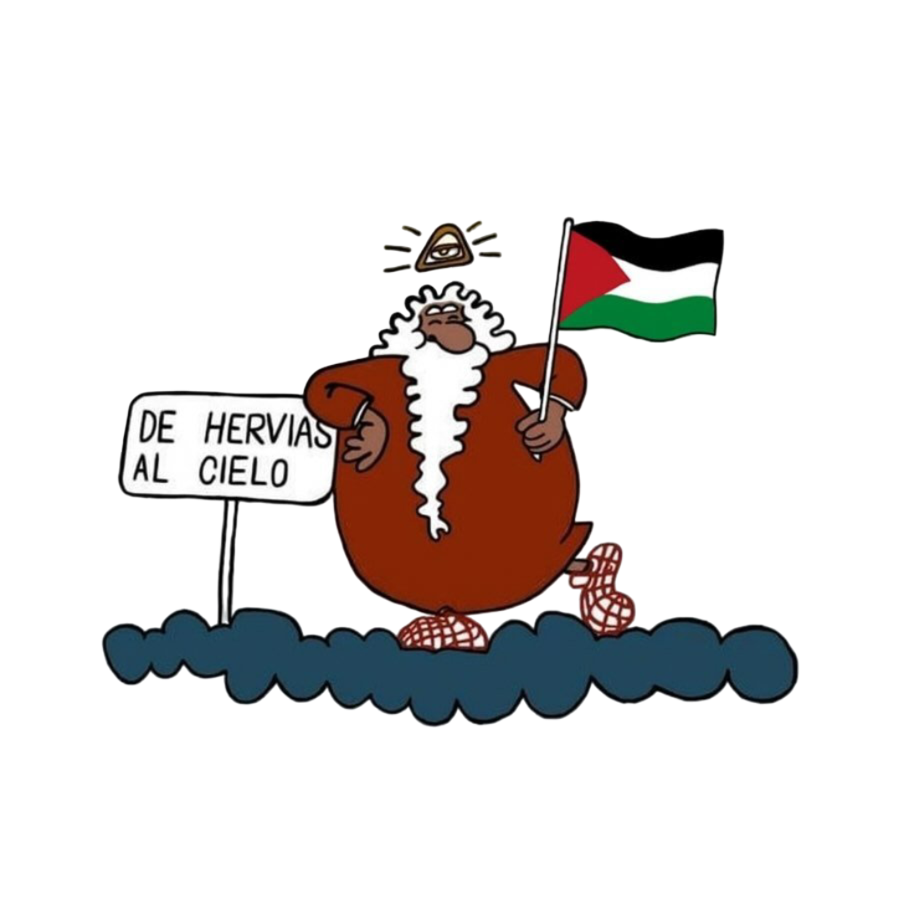

¿Quiénes somos?
La Peña El Revoque es una asociación cultural riojana sin ánimo de lucro, formada por vecinos y vecinas con ganas de mantener vivas nuestras tradiciones. Desde hace años organizamos fiestas, actividades y eventos que llenan de música, gastronomía y alegría las calles de nuestro pueblo.
Además de animar las celebraciones populares, contamos con un grupo de socios que colaboran de manera activa en la organización y en la financiación mediante una cuota anual. También disponemos de merchandising propio para que cualquiera pueda llevar con orgullo los colores y el espíritu de la Peña.
Nuestro objetivo es claro: hacer comunidad, reforzar los lazos de amistad y compartir el amor por la cultura riojana a través de la fiesta.
Nuestro compromiso solidario
En la Peña El Revoque creemos que la fiesta y la cultura también deben ir acompañadas de solidaridad y compromiso social. Por ello, cada año tratamos de aportar nuestro granito de arena apoyando a causas que lo necesitan.
Este año hemos querido dar un paso más: el 0,7% de los beneficios obtenidos en nuestras fiestas se ha destinado a apoyar a la población de Palestina, como muestra de nuestra voluntad de contribuir, aunque sea modestamente, a mejorar la vida de quienes atraviesan situaciones difíciles.
Con este gesto, reafirmamos nuestra convicción de que la alegría de la Peña se multiplica cuando se comparte, y que cada celebración también puede ser una oportunidad para ayudar a quienes más lo necesitan.